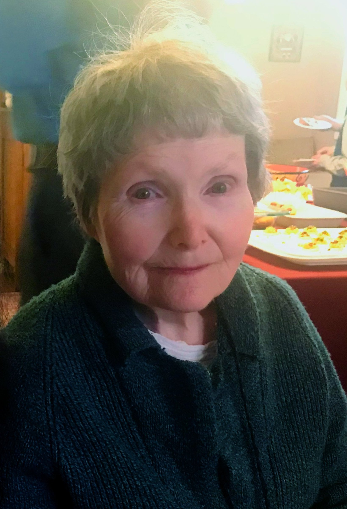

<%= t.renderMarkdown(archieml.text1.section1) %>
<%= t.renderMarkdown(archieml.text1.section2) %>
“I got her in there when she was perfectly healthy. She just looked half dead right there.” – Douglas Torgesen, son of Rosemary Torgesen
<%= t.renderMarkdown(archieml.text1.section3) %>
<%= t.include("partials/_ad.html", { type: "square" }) %>
<%= t.renderMarkdown(archieml.text1.section4) %>
Last year, Smokey Point’s own incident log showed 88 assaults, 33 discoveries of contraband and 26 employee injuries. State inspectors reviewing 13 medical files found nine patient incidents that never made it into the log, including suicide attempts, assaults, medication errors and sexual abuse.
<%= t.renderMarkdown(archieml.text1.section5) %>
Nate Weed is director of Community Health Systems at the state Department of Health. (Steve Ringman / The Seattle Times)
<%= t.renderMarkdown(archieml.text1.section6) %>
<%= t.include("partials/_ad.html", { type: "square" }) %>
richard response
<%= t.renderMarkdown(archieml.text1.section7) %>
<%= t.renderMarkdown(archieml.text1.section8) %>
“They’ve demonstrated that they don’t have a good track record of being able to care for patients safely, so we’re not going to allow them to do that.” – Nate Weed, director of the Department of Health’s Office of Community Health Systems

Washington’s severe shortage of inpatient beds for psychiatric patients put pressure state officials to add more capacity. Smokey Point Behavioral Hospital, a for-profit hospital in Marysville operated by US HealthVest, aimed to address the need. (Erika Schultz / The Seattle Times)
<%= t.renderMarkdown(archieml.text1.section9) %>
“Our patients turn to us in crisis and we take our responsibility to provide the highest level of care in the safest of therapeutic environments with the upmost seriousness.” ‑ Richard Kresch, CEO of US HealthVest
<%= t.renderMarkdown(archieml.text1.section10) %>
<%= t.include("_prerollVideo.html", { file: "christina_titlecard.mp4", id: "5845053912001", runtime: "1:40" }) %>
XXXXX (Erika Schultz / The Seattle Times)
<%= t.renderMarkdown(archieml.text1.section11) %>
<%= t.renderMarkdown(archieml.text1.section12) %>
<%= t.renderMarkdown(archieml.text1.section13) %>

Rosemary Torgesen is seen on Christmas Eve in 2017. Just three months later, Torgesen, who had schizophrenia, was involuntarily committed and admitted to Smokey Point Behavioral Hospital. (Courtesy of Jeffrey Torgesen)
<%= t.renderMarkdown(archieml.text1.section14) %>
<%= t.renderMarkdown(archieml.text1.section15) %>
Sarah Reum, 22, died by suicide Jan. 20, 2018, while she was a patient at US HealthVest’s Ridgeview Institute in Monroe, Georgia. Later that year, another patient there killed himself. In both cases, security video shows both patients, on suicide watch, were left alone for more than an hour when they were supposed to be checked every 15 minutes. (Courtesy of the Reum family)
<%= t.renderMarkdown(archieml.text1.section16) %>
At 4:04 p.m., a camera records Reum sitting in a chair in view of the nursing station, hands to her face, shoulders shaking.
After two minutes, she gets up and walks down the hall to her room.
Fifteen minutes go by without anyone checking on her. Thirty minutes pass. Forty-five minutes. An hour.
At 5:12 p.m., a staffer enters her room, turns and runs down the hall to the nursing station, motioning for others to come.
A nurse and another staffer accompany her, in no apparent hurry, to Reum’s room.
More staff come running, followed by police and paramedics, but they are too late.
Shortly after 6 p.m., Sarah Reum was declared dead by suicide.
<%= t.renderMarkdown(archieml.text1.section17) %>
Her older daughter’s first day of school was this month, but Reum “didn’t get to see it because somebody didn’t do their job,” said Reum’s mother, Stacey Jenkins.
<%= t.renderMarkdown(archieml.text1.section18) %>
When the coroner informed Morris’s family of his death, his father slumped to floor. “It is a lie,” his mother said repeatedly, according to the police report. How, she cried, could someone on suicide watch commit suicide in a hospital?
<%= t.renderMarkdown(archieml.text1.section19) %>
<%= t.renderMarkdown(archieml.text1.section20) %>
“Every day I worked at Smokey Point Behavioral Hospital, I was afraid for my life and the lives of my patients,” says nurse Christina Perry. (Erika Schultz / The Seattle Times)
“Every day I worked at Smokey Point Behavioral Hospital, I was afraid for my life and the lives of my patients.” – Christina Perry, former Smokey Point nurse
<%= t.renderMarkdown(archieml.text1.section21) %>
On June 24, nursing staff found Rosemary had a bedsore. The woman who never complained said of her pain, “It’s terrible.”
<%= t.renderMarkdown(archieml.text1.section22) %>
In July 2017, Gov. Jay Inslee and Tulalip Tribes Chairwoman Marie Zackuse cut the ribbon at the Smokey Point Behavioral Hospital grand opening. Since 2012, the state has approved or expanded 10 private psychiatric hospitals, nine of which are for-profit. (Kalvin Valdillez / Tulalip News)
<%= t.renderMarkdown(archieml.text1.section23) %>
As the state director of Veterans Affairs helped dedicate the new unit at Smokey Point, three Department of Health inspectors were conducting an investigation inside the hospital. They completed a report the next day, finding serious violations including the failure “to ensure nursing staff were trained and available to provide safe and effective care.”
<%= t.renderMarkdown(archieml.text1.section24) %>
<%= t.renderMarkdown(archieml.text1.section25) %>
“Governor Inslee is a strong supporter of our model,” the company wrote in a memo for regulators last August, including a link to a YouTube video of his remarks at Smokey Point’s opening.
<%= t.renderMarkdown(archieml.text1.section26) %>
interactive <%= t.include("partials/_ad.html", { type: "square" }) %>
<%= t.renderMarkdown(archieml.text1.section27) %>
Four of Rosemary Torgesen’s seven children visit her grave in Shoreline. From left: Marjorie Erickson, Jeff Torgesen, Maurya Smith and Douglas Torgesen. (Erika Schultz / The Seattle Times)
<%= t.renderMarkdown(archieml.text1.section28) %>
XXXXX (Erika Schultz / The Seattle Times)
- Reporter: Daniel Gilbert
- Project editor: Ray Rivera
- Photographer: Erika Schultz
- Photo editor: Fred Nelson
- Video editor: Lauren Frohne
- Developer and graphic artist: Emily M. Eng
- Illustrator: Gabriel Campanario
- Engagement: Taylor Blatchford
- Project coordinator: Laura Gordon